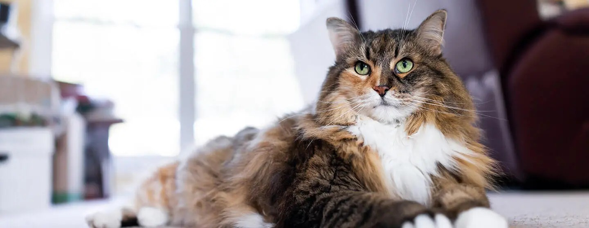
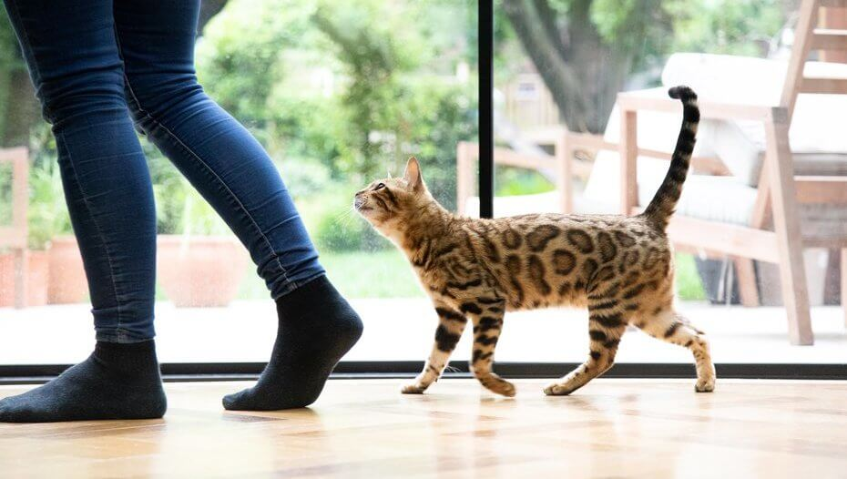

Цікаві факти про котів

Коти — це загадка, яка тисячоліттями полонила людські серця. Їх
загадкові характери та чарівна зовнішність зробили їх неймовірно
популярними домашніми улюбленцями. З такою великою кількістю
котів навколо нас, напевно, це означає, що всі знають про них
усе, що тільки можна, чи не так? А ось і ні! Існує так багато
цікавих фактів про котів, про які ви, напевно, не чули: від
найбільшого кота у світі до дивовижної манери ходити.
Зміст
- Найдавніша відома домашня кішка існувала
9500 років
тому
- Коти проводять 70 % свого життя уві
сні
- Кіт був мером міста на Алясці протягом 20
років
- Рекорд найдовшого кота в історії — 48,5
дюймів
- Найбагатший кіт у світі мав 7 мільйонів
фунтів
стерлінгів
- Ісаак Ньютон винайшов котячі
двері
- У 1963 році кіт відправився в
космос
- Стародавні єгиптяни збривали брови, коли
помирали їхні
коти
- Домашні коти мають 95,6 % спільного
генетичного
складу з тиграми
- Домашній кіт може розвивати швидкість до
48 км на годину
Найдавніша відома домашня кішка існувала 9500 років
тому
Це один з цікавих фактів про котів гарантовано вразить вас на
наступній званій вечері. Чи знали ви, що спочатку вважалося, що
єгиптяни одомашнили кішку? Але у 2004 році французькі археологи
виявили на Кіпрі котячу могилу, якій 9 500 років. Це робить її
найдавнішою з відомих домашніх кішок, і вона передує
єгипетському мистецтву про котів більш ніж на 4 000 років!
Коти проводять 70 % свого життя уві сні
Якщо ви думали, що коти проводять більшу частину свого життя уві
сні,
ви маєте рацію. За даними Veterinary Hub, коти насправді
проводять
70 % свого життя уві сні, що становить близько 13–16 годин на
добу.
Це котяче життя!
Кіт був мером міста на Алясці протягом 20
років
Рудий кіт на прізвисько Стаббс був мером Талкетна, невеликого
містечка на Алясці, протягом 20 років! Він виграв кілька
беззаперечних виборів, і хоча не мав жодної законодавчої влади,
його
любили як місцеві жителі, так і туристи.
Рекорд найдовшого кота в історії — 48,5 дюймів
Домашні коти зазвичай вважаються досить маленькими та витонченими
створіннями. Але чи знали ви, що найдовшим котом у світі був
мейн-кун на ім’я Стьюї, довжина якого становила 123 см? А рекорд
найвищого кота належав Арктуру, його зріст сягав 50 см! Ось такі
великі коти.
Найбагатший кіт у світі мав 7 мільйонів фунтів
стерлінгів
Найбагатший кіт у світі за версією Книги рекордів Гіннеса —
Блеккі. Коли його власник-мільйонер помер, він відмовився
визнати свою сім’ю у своєму заповіті й замість цього віддав свій
статок у 7 мільйонів фунтів Блекі! Ці факти про котів просто
неймовірні!

Ісаак Ньютон винайшов котячі двері
Учений найбільш відомий тим, що розрахував силу тяжіння, але
також вважається, що Ісаак Ньютон винайшов котячі двері. Видання
How Stuff Works пише, що коли Ньютон працював над своїми
експериментами в Кембриджському університеті, йому постійно
заважали коти, які дряпалися у двері. Тому він покликав
кембриджського теслю, щоб той випиляв у дверях два отвори: один
для матері-кішки, а другий — для її кошенят! Мабуть, ці отвори
можна побачити в університеті й сьогодні.
У 1963 році кіт відправився в космос
Ви чули про мавп і собак у космосі, але чи знали ви, що кішка теж
наважилася на це? 18 жовтня 1963 року Фелісетт, також відома як
«Астрокішка», стала першою і єдиною кішкою, яка побувала в
космосі.
Стародавні єгиптяни збривали брови, коли помирали
їхні коти
Згідно з Енциклопедією стародавньої історії, Геродот писав у 440
році до н.е., що коли в Стародавньому Єгипті помирав домашній
кіт, члени сім’ї в жалобі збривали йому брови.
Домашні коти мають 95,6 % спільного генетичного
складу з
тиграми
Цей цікавий факт про котів дійсно вразить вас. Дослідження
показало, що наші маленькі домашні коти мають 95,6 % генетичного
складу з тиграми! Вони також мають багато спільних рис
поведінки, таких як мічення запахом та сечею, переслідування
здобичі та напад.
Домашній кіт може розвивати швидкість до 48 км на
годину
Якщо ви спостерігали, як ваш котик бігає по вітальні, коли
відчуває себе бадьорим, ви знаєте, що коти досить швидкі, але ви
не повірите таким цікавим фактам про домашніх котів. Вони можуть
розвивати швидкість близько 48 км на годину, це настільки
швидко, що можуть обігнати Усейна Болта в бігу на 200 метрів!